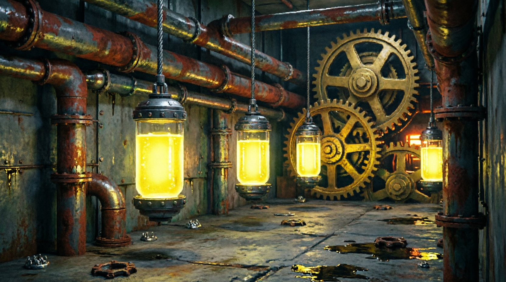

О ПРОЕКТЕ
Машины победили давно. Люди стали сырьём.
Dark Machine — это мрачная пиксельная метроидвания, действие которой разворачивается внутри гигантского механического комплекса, построенного машинами для собственного воспроизводства.
Люди здесь больше не считаются живыми существами. Их выращивают в капсулах, перерабатывают и используют как биологический ресурс для развития системы.
Главный герой — один из таких людей. Он был создан лишь как очередная деталь механизма. Но после сбоя в нижних секторах завода его капсула неожиданно выходит из строя. Вместо смерти система дарит ему то, чего у него никогда не должно было быть — шанс.
Шанс выжить.
Шанс выбраться наружу.
Шанс остаться человеком.

⚡ Общая концепция
Игра строится вокруг системы взаимоисключающих улучшений.
Игрок постоянно сталкивается с выбором: сохранить человеческую природу или принять механические модификации ради силы.
Каждое улучшение меняет способности, стиль прохождения, взаимодействие с миром и отношение системы к герою.
Постепенно игрок начинает понимать, что главный вопрос Dark Machine — не выживание. А то, сколько человечности останется после него.
📊 Формат
| Жанр | Pixel Metroidvania |
| Формат | Одиночная сюжетная игра |
| Камера | 2D Side View |
| Время прохождения | 5–10 часов |
| Движок | Godot Engine |
| Платформа | PC (Windows/Linux) |
Мир Dark Machine
Весь мир игры — это гигантский многоуровневый завод, перерабатывающий людей и производящий машины. Он функционирует как замкнутая система, где каждая зона подчинена общей цели — поддержанию и развитию механического мира.
Каждый этаж отличается архитектурой, уровнем технологий, опасностью и отношением системы к человеку. Чем выше поднимается игрок — тем менее человеческим становится окружающий мир.
Нижние уровни заполнены ржавчиной, отходами и заброшенными секторами. Верхние — стерильны, холодны и практически лишены признаков жизни.
PROCESSING FACILITY
Герой и выбор
Герой игры — обычный человек, которому случайно удаётся избежать смерти в недрах завода. Он не избранный и не обладает особыми способностями — для системы Dark Machine он лишь ошибка, сбой, который необходимо устранить. Его единственная цель — выжить, подняться на верхние этажи и найти выход из этого проклятого механического мира.
Чтобы противостоять опасностям завода, герой вынужден искать специальные предметы и развивать свои способности. Система развития строится вокруг двух взаимоисключающих путей: мусорщика и киборга.
Мусорщик
Использует найденные отходы и обломки для создания инструментов и временных устройств.
Сохраняет человеческое тело, но зависит от изобретательности и адаптации.
Путь выживания через хитрость.
Киборг
Модифицирует собственное тело, постепенно заменяя плоть механическими аугментациями.
Становится сильнее, быстрее и опаснее — но постепенно теряет человечность.
Путь силы через трансформацию.
Геймплей
🗺️ Исследование мира
Основу игрового процесса составляет классическая метроидвания с исследованием взаимосвязанных локаций, множеством скрытых проходов, коротких путей и секретов.
Мир завода постепенно раскрывается по мере получения новых способностей, поощряя возвращение в ранее посещенные зоны и внимательное изучение окружения.
⚔️ Боевая система
Боевая система строится вокруг сражений с различными типами противников и сложными боссами, где от игрока требуется аккуратность, знание паттернов врагов и грамотное использование способностей.
Ошибки наказываются, а победы достигаются за счёт понимания систем, а не грубой силы.
⚙️ Уникальность геймплея
Уникальность Dark Machine заключается в сочетании нестандартного сеттинга, давящей атмосферы и системы развития персонажа, позволяющей собирать различные билды.
Выбор способностей не просто усиливает героя, но формирует стиль прохождения и напрямую влияет на способы взаимодействия с миром.
Это создаёт высокую реиграбельность: каждое прохождение может быть уникальным.
Визуальный стиль и атмосфера
Визуальная концепция
Визуальный стиль Dark Machine формируется на пересечении минималистичной выразительности Haiku, the Robot и визуальной перегруженности Axiom Verge.
Атмосфера давления
Главная задача атмосферы — вызывать у игрока ощущение постоянного давления и скрытой угрозы.
- Масштаб локаций подавляет
- Давящая архитектура угнетает
- Холодная цветовая палитра отчуждает
- Ощущение безразличного механизма